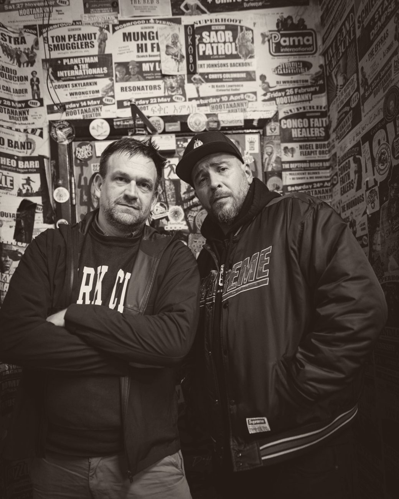
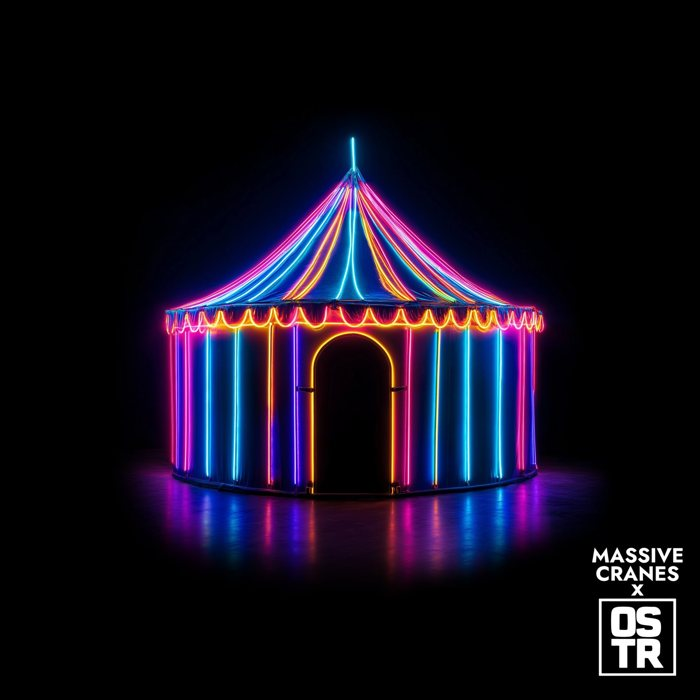
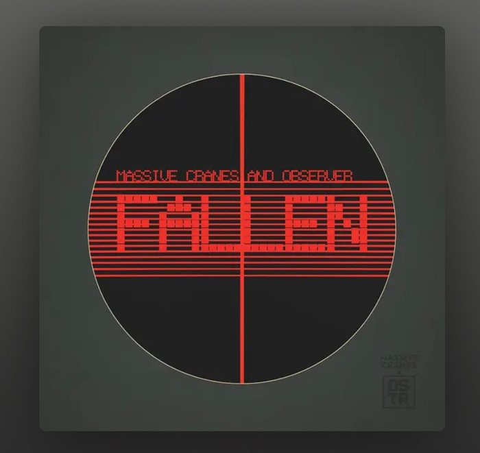

71
days until you
album · 2 feb 2027.

dan crane & o.s.t.r. · london / łódź · since 2004.
monuments.
2024

carnival.
2025

fallen.
2025
music to sit down to.
2026
dan crane of massive cranes · four albums, 2024 to 2026.